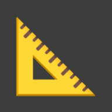

-

Établi Mes projets, semaine par semaine - Banque Mes comptes et mes dépenses
- Forge Mon entraînement parkour
Une seule app à installer : les autres s'ouvrent depuis ces tuiles, chacune avec son propre style.

Établi Mes projets, semaine par semaineUne seule app à installer : les autres s'ouvrent depuis ces tuiles, chacune avec son propre style.